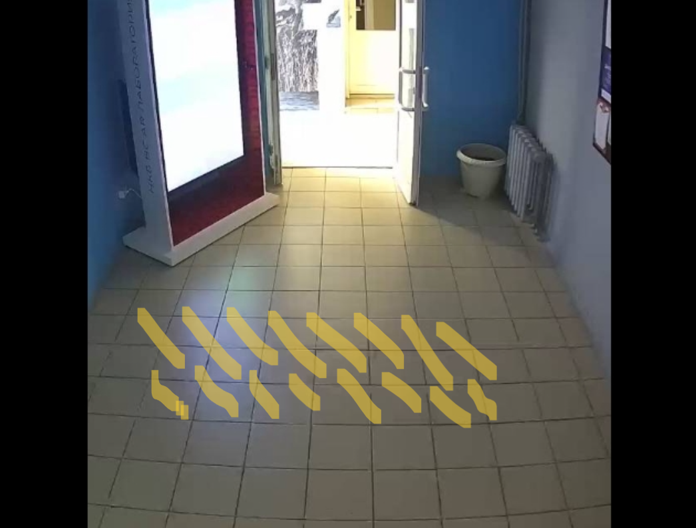

FAQ ПО СИСТЕМЕ РАСПОЗНАВАНИЯ
Привет, ты попал на страничку про систему распознавания сотрудников СКБ "КИТ". Вот несколько вещей, которые тебе следует знать, прежде чем писать разработчику.
Краткая выжимка (для тех, кто не осилит текст ниже):
- Сказало "Нет ответа от сервера" — тебя распознало, время запишется правильное, когда сервер встанет.
- Не выпикнуло на выходе — не паникуй, в конце дня выкинет автоматически, часы засчитаются.
- Всё лежит, тормозит сеть или молчит говорилка — писать разработчику не надо, он эти сервисы поднимать не может.
Общие сведения.
1. Система состоит из нескольких модулей.
- Камеры на вход и на выход (работают одинаково).
- Сеть.
- Голосовое приветствие/прощание.
- Запись в удаленную БД.
Известные проблемы, за которые разработчик несет ответственность:
- Некорректная запись на вход/выход — исправлено, ожидается запуск на сервере (после тестирования).
- Система не поднимается самостоятельно, если сервер лег — исправлено, ожидается запуск на сервере.
- Долгая реакция системы (частично, см. ниже).
- Камера на выход умирает (см. ниже).
То самое "см. ниже":
Долгая реакция обусловлена несколькими факторами, основные из которых:
- модульность системы, благодаря которой система не укладывается уже очень продолжительное время (в меньшей степени, требуются эксперименты для исправления);
- сеть и нагрузка на сервер г...а (в большей степени).
С сетью разработчик не может сделать НИЧЕГО.
Умирающая камера на выход умирает из-за:
- своих физических особенностей (да, она присылает битые кадры, которые не всегда обрабатываются) — редко;
- специфического ракурса (можно самостоятельно проверить, камера на вход по сравнению с ней работает отлично);
- общее для обеих камер: смена айпишников по приколу. Системе нужно некоторое время (до 5 минут), чтобы найти новый айпишник камеры или восстановить соединение, если камера отвалилась от сети и перестала отвечать — разработчик также не может с этим фактом сделать НИЧЕГО.
Как понять, что не надо писать разработчику (он не сможет ничего сделать):
- Все сервисы лежат.
- Лежат сервисы скб.
- Проблемы с сетью.
- Вас отметило, но звукового приветствия не последовало.
- Было голосовое сообщение "Нет ответа от сервера".
Вопросы по отметке присутствия:
- Если "нет ответа от сервера", отметка пройдет позже, когда сервер встанет. Вас распознало. Вас на вход/выход запишет корректным временем. Но после того, как сервер встанет.
- "Я ушел, но меня не выпикнуло, что же делать, все пропало". Нет, не пропало. В конце дня вас автоматически выкинет, все часы засчитаются (с компенсацией за моральный ущерб в несколько дополнительных часов).
Когда писать разработчику НУЖНО (и как это делать):
Если вашей проблемы точно нет в списках выше, и это что-то новое — пишите разработчику, но обязательно укажите:
- Дату и время.
- Вход или выход.
- Подробное описание, что именно пошло не так (что было на экране / что сказала говорилка).
Для самых принципиальных.
Если ну очень хочется выпикиваться вовремя, то гулять надо вот здесь:

Для самых умных и умелых мега супер пупер кодеров, которые это все сделают за два часа: мое почтение. Вы молодцы. Разработчик не молодец.
P.S. Про базы данных
Для справки: у разработчика есть две БД — удаленная и локальная. Всё, что видите вы — это данные из удаленной БД.
Если что-то сломалось и кажется, что отметка бесследно пропала — не надо паниковать, можно просто попросить разработчика посмотреть, что лежит в локальной. На удаленную бд разработчик самостоятельно повлиять не может (и не хочет).